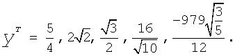
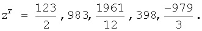
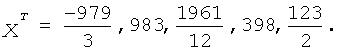

Intel® oneAPI Math Kernel Library Developer Reference - Fortran
For solvers that use the direct method, the basic technique employed in finding the solution of the system Ax = b is to first factor A into triangular matrices. That is, find a lower triangular matrix L and an upper triangular matrix U, such that A = LU. Having obtained such a factorization (usually referred to as an LU decomposition or LU factorization), the solution to the original problem can be rewritten as follows.
This leads to the following two-step process for finding the solution to the original system of equations:
Solve the systems of equations Ly = b.
Solve the system Ux = y.
Solving the systems Ly = b and Ux = y is referred to as a forward solve and a backward solve, respectively.
If a symmetric matrix A is also positive definite, it can be shown that A can be factored as LLT where L is a lower triangular matrix. Similarly, a Hermitian matrix, A, that is positive definite can be factored as A = LLH. For both symmetric and Hermitian matrices, a factorization of this form is called a Cholesky factorization.
In a Cholesky factorization, the matrix U in an LU decomposition is either LT or LH. Consequently, a solver can increase its efficiency by only storing L, and one-half of A, and not computing U. Therefore, users who can express their application as the solution of a system of positive definite equations will gain a significant performance improvement over using a general representation.
For matrices that are symmetric (or Hermitian) but not positive definite, there are still some significant efficiencies to be had. It can be shown that if A is symmetric but not positive definite, then A can be factored as A = LDLT, where D is a diagonal matrix and L is a lower unit triangular matrix. Similarly, if A is Hermitian, it can be factored as A = LDLH. In either case, we again only need to store L, D, and half of A and we need not compute U. However, the backward solve phases must be amended to solving LTx = D-1y rather than LTx = y.
Two important concepts associated with the solution of sparse systems of equations are fill-in and reordering. The following example illustrates these concepts.
Consider the system of linear equation Ax = b, where A is a symmetric positive definite sparse matrix, and A and b are defined by the following:
A star (*) is used to represent zeros and to emphasize the sparsity of A. The Cholesky factorization of A is: A = LLT, where L is the following:
Notice that even though the matrix A is relatively sparse, the lower triangular matrix L has no zeros below the diagonal. If we computed L and then used it for the forward and backward solve phase, we would do as much computation as if A had been dense.
The situation of L having non-zeros in places where A has zeros is referred to as fill-in. Computationally, it would be more efficient if a solver could exploit the non-zero structure of A in such a way as to reduce the fill-in when computing L. By doing this, the solver would only need to compute the non-zero entries in L. Toward this end, consider permuting the rows and columns of A. As described in Matrix Fundamentals, the permutations of the rows of A can be represented as a permutation matrix, P. The result of permuting the rows is the product of P and A. Suppose, in the above example, we swap the first and fifth row of A, then swap the first and fifth columns of A, and call the resulting matrix B. Mathematically, we can express the process of permuting the rows and columns of A to get B as B = PAPT. After permuting the rows and columns of A, we see that B is given by the following:
Since B is obtained from A by simply switching rows and columns, the numbers of non-zero entries in A and B are the same. However, when we find the Cholesky factorization, B = LLT, we see the following:
The fill-in associated with B is much smaller than the fill-in associated with A. Consequently, the storage and computation time needed to factor B is much smaller than to factor A. Based on this, we see that an efficient sparse solver needs to find permutation P of the matrix A, which minimizes the fill-in for factoring B = PAPT, and then use the factorization of B to solve the original system of equations.
Although the above example is based on a symmetric positive definite matrix and a Cholesky decomposition, the same approach works for a general LU decomposition. Specifically, let P be a permutation matrix, B = PAPT and suppose that B can be factored as B = LU. Then
Ax = b
PA(P-1P)x = Pb
PA(PTP)x = Pb
(PAPT)(Px) = Pb
B(Px) = Pb
LU(Px) = Pb
It follows that if we obtain an LU factorization for B, we can solve the original system of equations by a three step process:
Solve Ly = Pb.
Solve Uz = y.
Set x = PTz.
If we apply this three-step process to the current example, we first need to perform the forward solve of the systems of equation Ly = Pb:
This gives:

The second step is to perform the backward solve, Uz = y. Or, in this case, since a Cholesky factorization is used, LTz = y.
This gives

The third and final step is to set x = PTz. This gives
